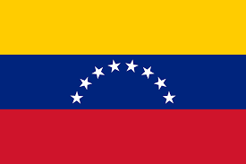

Venezuela

Los pueblos originarios de Venezuela son grupos que en la actualidad conforman aproximadamente el 2,9 % de la población. Sin embargo, la población venezolana en general tiene en su composición genética una contribución amerindia entre un 23% y 25 % del total.23 Son por lo menos 34 etnias que mantienen culturas totalmente limpias y originarias de la región, que no se vieron afectadas por la conquista y asimilación española durante la época de colonización.
Según el censo de 2011, la mayoría se hallan en zonas de los estados de Zulia (61,2 %), Amazonas (10,5 %), Bolívar (7,5 %), Delta Amacuro (5,7 %), Anzoátegui (4,7 %), Sucre (3,1 %), Monagas (2,5 %) y Apure (1,6 %).
Estos grupos además, se encuentran también compartidos con Colombia, Brasil y Guyana.